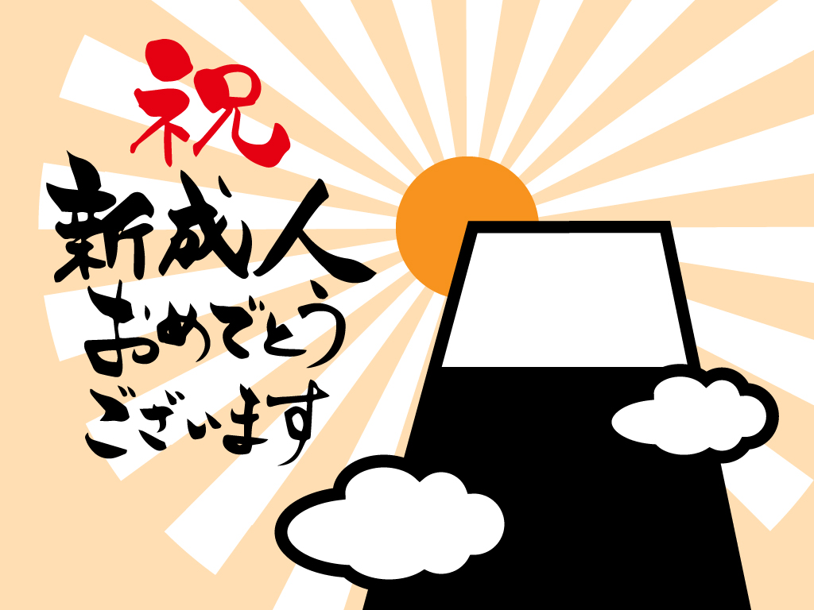

キービジュアル制作

- 制作内容
- 授業課題もしくはオリジナル、トレース
- 構想・構成時間
- 50分
- 制作時間
- 20分
- ツール エディター
- Photoshop Illustrator Brackets Visual Studio Code
- 今回学んだこと
-
例）
ペンツール・ 回転ツール・リフレクトツール・パスファインダー・整列・シンボルマーク・ブラシ・バウンディングボックスのリセット・変形・パンク膨張・グリッド表示・ガイド線・ぶら下がり・テキストエリア内文字・グラデーション・光彩・乗算・焼き込みカラー・マスク・スマートオブジェクト - 感想
- 例）
今回は、商用可無料サイトよりイメージ画像を探し出し、数点作成しました、同じ構成でも背景に使用する写真画像でイメージが変わること、文字の大きさ=ジャンプ率を変更し、フォントが持つイメージを利用してデザインメッセージが変わることと、デザイン性が高まることを学びました。